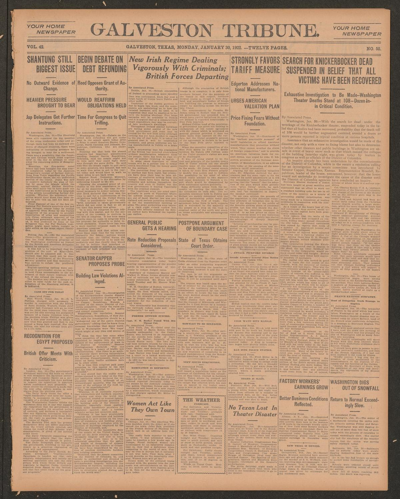
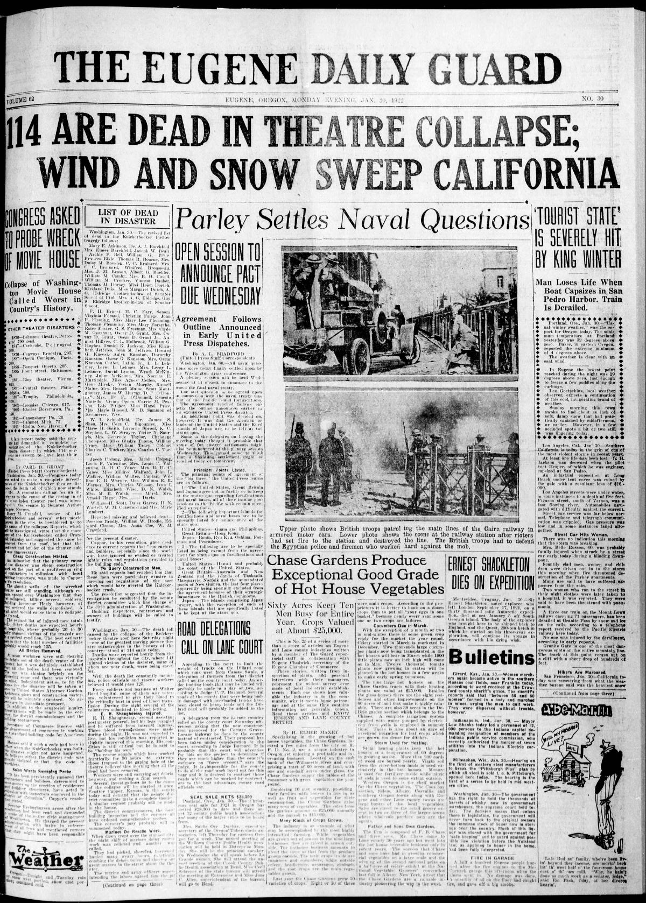
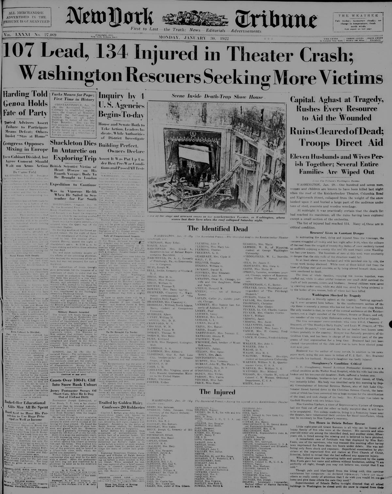

HN HN-430 · January 30, 1922 · Disasters, Accidents & Emergencies > Building & Infrastructure Collapses > Buildings
Source: South Bend News-Times, p. 1 — original page; National Weather Service retrospective.
Report: Following a heavy Washington, D.C., snowfall, the roof of the Knickerbocker Theatre collapsed onto its audience. The newspaper led with 107 on the casualty list, while reports from the wreckage described ongoing rescues, including children pulled out alive.
Assessment: The federal weather retrospective records 98 dead and 158 injured. The original headline reflects an unstable emergency tally, not evidence for 107 confirmed deaths. A heavy snow load and structural failure explain the disaster without the need for sabotage theories.
Authentic scans retrieved from The Portal to Texas History (University of North Texas), Historic Oregon Newspapers (University of Oregon) and Library of Congress / Chronicling America. Article crops are located using the archive's own OCR word coordinates and rendered at native crop resolution; page scans are reduced-size access renditions. No images were generated, mocked, or retouched.



Not yet acquired. Queued for provider-specific acquisition testing (see source-acquisition manifest).
URL (preserved verbatim): https://newspapers.library.in.gov/?a=d&d=SBNT19220130.1.1
Saved research report: Historical_Newspaper_Event_Research_428-452_2026-10-23.md
Evidence note: A newspaper report means a historical publication made a claim; it does not establish that claim as fact. Contemporary reporting is separated from later scholarly context and our own assessment.